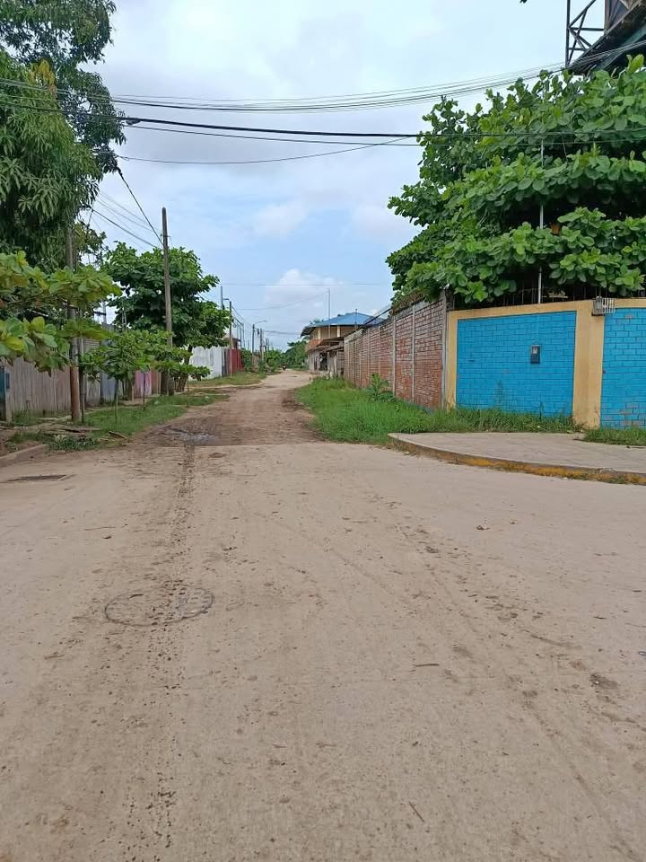

Precio desconocido 1,050 m²

HERMOSO TERRENO DE 1050 M2 EN VENTA EN PUCALLPA 🏠 📌 Área : 30 x 35 ( 1050 M2 ). 📌 Documento: titulo de propiedad inscrito en registro público . 📌 Ubicación: A una cuadra del parque de fraternidad y Posta. La propiedad se encuentra en la esquina . 📌 Servicios básicos: Luz ,agua , desagüe. 📌 Ideal para casa de campo , construcción de apartamentos,oficinas ,almacén y mucho más. Ya que se encuentra en un lugar estratégico en pleno crecimiento comercial . 📌 Cuenta con árboles frutales 🌳 guanabana ,mango 🥭 ingerto , árbol de plátano de seda 🍌y común ,